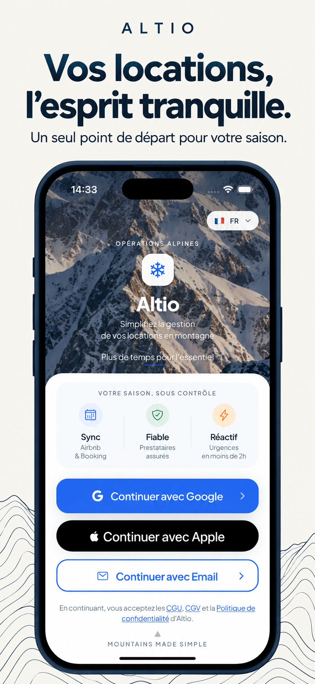
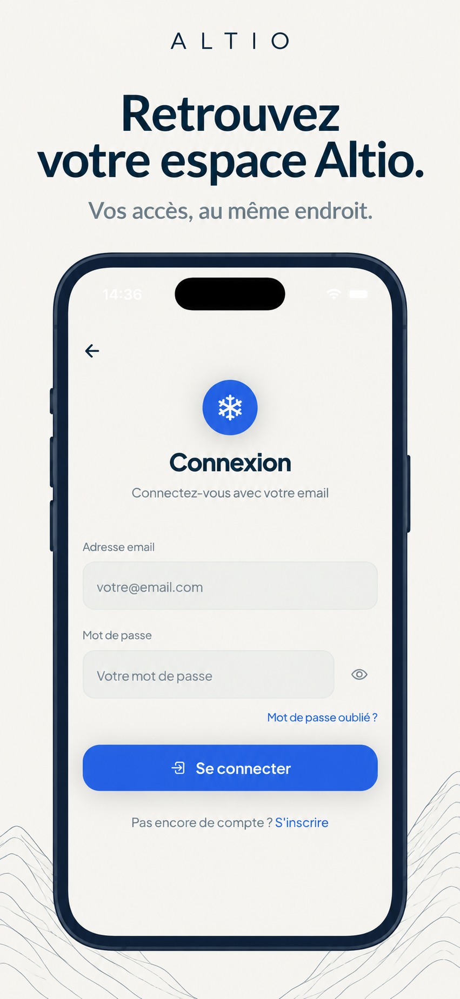

ALTIO · LANCEMENT · FRANCE
Votre dossier App Store
Préparation, pas encore prêt à soumettre. Les descriptions sont rédigées. Trois captures publiques ont été prises. Les deux habillages ci-dessous sont des brouillons générés : le format Apple final et la fidélité pixel à pixel ne sont pas garantis. Les six captures métier attendent des comptes de démonstration.
Lire le rapport de prévalidation et les blocages
Textes à reprendre dans App Store Connect
Premiers habillages — brouillons

Accueil / direction artistique
Promesses internes à justifier ou corriger ; export non conforme aux dimensions Apple.
Connexion / direction artistique
Écran public uniquement, à remplacer dans la série principale par un parcours métier.Captures natives originales
Accueil · Connexion · Inscription — iPhone 17, 1206 × 2622.
Limites et préparation des exports finaux